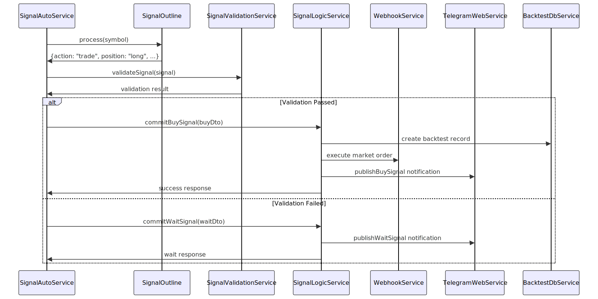

This document covers the core signal generation and validation pipeline that transforms market data into executable trading decisions. The system uses AI-driven analysis with multiple validation layers to ensure high-quality trading signals before execution.
For information about position management after signal execution, see Position Management and Closing. For details about the risk assessment system that governs when signals can be generated, see Risk Assessment.
The signal generation process is orchestrated by the SignalOutline system, which performs comprehensive market analysis using AI models to determine optimal entry points for trading positions.
The core signal generation logic resides in SignalOutline which processes market data through sophisticated AI prompts to make trading decisions.

The signal generation frequency adapts based on market conditions through a dynamic Time-To-Live system:
| Market Condition | TTL Period | Description |
|---|---|---|
BULLISH_TTL |
2.5 minutes | Active growth, position="long" |
BEARISH_TTL |
1.5 minutes | Active decline, position="short" |
NEUTRAL_TTL |
5 minutes | Sideways movement, position="wait" |
The TTL system ensures more frequent analysis during volatile periods and reduces computational overhead during stable market conditions.
The signal generation process incorporates data from six specialized mathematical services, each optimized for specific timeframes and analysis types.

Before any signal reaches the market, it must pass through multiple validation layers implemented by SignalValidationService and related components.

The validation system implements a five-level signal strength control that determines minimum Take Profit and Stop Loss thresholds:
| Strength Level | UI Control | TP Threshold | SL Threshold | Backend Flags |
|---|---|---|---|---|
| Level 1 | Minimal | 0.5% | 0.25% | isSignalStrengthMinimal |
| Level 2 | Low-Medium | 1.0% | 0.5% | isSignalStrengthLowMedium |
| Level 3 | Medium (default) | 1.5% | 0.75% | isSignalStrengthMedium |
| Level 4 | Medium-High | 2.0% | 1.0% | isSignalStrengthMediumHigh |
| Level 5 | Maximal | 3.0% | 1.5% | isSignalStrengthMaximal |
The validation system integrates with six AI behavior feature flags that provide granular control over signal processing:

Once a signal passes validation, it enters the execution pipeline which handles market order placement and position tracking.

The execution pipeline involves several key services working in coordination:
| Component | File Path | Responsibility |
|---|---|---|
SignalLogicService |
src/lib/signal/services/logic/SignalLogicService.ts |
Central trading execution logic |
WebhookService |
- | External system notifications |
TelegramWebService |
src/lib/signal/services/web/TelegramWebService.ts |
User communication |
BacktestDbService |
src/lib/signal/services/db/BacktestDbService.ts |
Trade history and consolidation tracking |
SignalDbService |
- | MongoDB operations |
The signal generation process is driven by configurable AI prompts that can be customized without code changes through an enterprise-grade override system.

The signal prompt system uses a sophisticated multi-section approach defined in config/prompt/signal.prompt.cjs:
The prompt provides specific criteria for different trading approaches:
| Strategy Type | Timeframe | Key Indicators | Conditions |
|---|---|---|---|
| Fast Long Trading | 15-minute | RSI, StochRSI, Volume explosions | High volatility, clear upward impulses |
| Swing Long Trading | 30-minute | MACD, Fibonacci levels | Moderate volatility, stable upward trends |
| Position Long Trading | 1-hour | EMA alignment, Volume confirmation | Strong long-term upward trend |
| Fast Short Trading | 15-minute | RSI, StochRSI, Volume breakdowns | High volatility, clear downward impulses |
| Swing Short Trading | 30-minute | MACD bearish signals | Moderate volatility, stable downward trends |
| Position Short Trading | 1-hour | EMA breakdown, Volume confirmation | Strong long-term downward trend |
The prompt defines specific conditions when the system should output action: "wait" instead of generating trade signals:
The system also emphasizes historical P&L analysis, requiring the AI to study previous trade outcomes and avoid repeating conditions that led to losses, giving historical performance priority over current technical indicators.